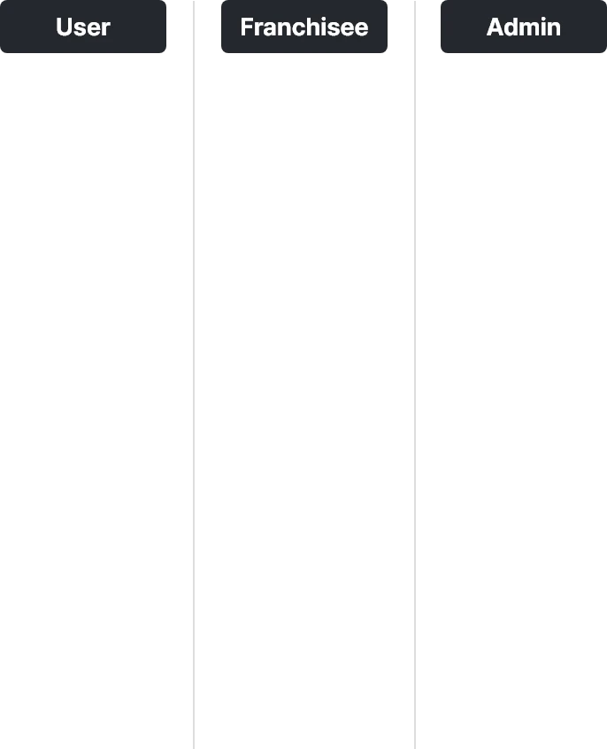
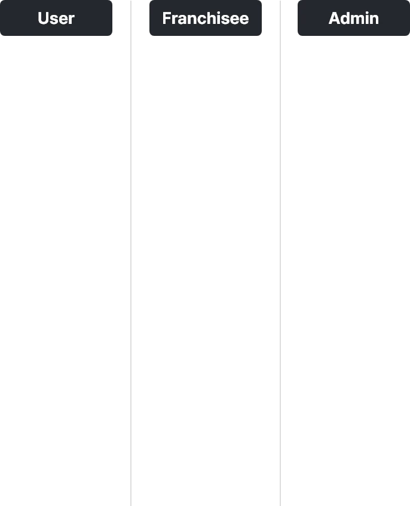

- UX&UI
- APP PROJECT
- Website Project (PC / Mobile)
즐거운 문화를 만드는, 파이널 나인
'파이널나인' 모바일 멤버십
전국 39개 지점 오프라인 매장의 회원 및 포인트 관리를 위해
파이널나인만의 정체성을 유지하며, 파이널나인 자체 앱 개발을
통해
브랜드 강화 및 독점적 브랜딩과 그에 따른 고객
가치를
기반으로 파이널나인을 정의합니다.

Franchisee
Admin
운영 이슈에 따라 게임을 즐길 사용자, 프렌차이즈 가맹점,
관리자로 구분하여 정량화 된 데이터 기반 유저 사용성을
고려한 기획설계를 전개합니다.
 

FINAL NINE UX/UI Design
MAIN
오프라인 매장과 연계하여 기존 매장에서 주로 운영하던
컨텐츠 메뉴를
온라인으로 전환합니다. 이에 사용자가
직관적으로 이동할 수 있는
편의성을 고려하여 대시보드
디자인에 녹여 사용자 편의성을 높여줍니다.
파이널나인 고유의 포인트컬러를 활용하여 심플하지만
재미요소를 놓치지 않았습니다.


오프라인 매장 운영
서울, 경기, 대구, 부산, 청주, 광주, 인천,
일산, 포항, 구미, 창원, 대전


FINAL NINE UX/UI Design
POINT
POINT
상단에서 바로 나의 포인트를 직관적으로 볼 수 있도록 합니다.
이 외 년도, 타임라인 별 사용 리스트를 보여줌으로써
온/오프라인에 대한 활용성을 높여줍니다.
상단에서 바로 나의 포인트를 직관적으로
볼 수 있도록 합니다. 이 외 년도, 타임라인 별
사용 리스트를 보여줌으로써 온/오프라인에 대한
활용성을 높여줍니다.
FINAL NINE UX/UI Design
REWARD
REWARD
출석체크 이벤트를 참여해보세요!
온/오프라인 이벤트 달성 시,
다양한 리워드 획득이 가능합니다.

FINAL NINE UX/UI Design
RANKING
RANKING
유저의 랭킹을 직관적으로 볼 수 있습니다.
본인의 점수를 자랑 하고 친구들과 소통
하며, 함께 경쟁해보세요!
FINAL NINE UX/UI Design
STORE INFORMATION
STORE
INFORMATION
오프라인 매장 위치기반으로 큐레이팅하여 노출됩니다.
언제 어디서든 파이널나인에 참여하고,
콘텐츠를 즐겨보세요!
간편한 초대기능으로
함께 즐길 수 있어요!
쉽고 간편한 초대기능으로
친구들과 함께 게임을 즐겨보세요.
캘린더를 통해 일정 관리까지 손 쉽게!

즐거운
문화를 만드는
파이널나인
즐거운 문화를 만드는
파이널나인
모든 이들과 함께 즐길 수 있는
공간을 제공합니다.

CONCEPT
아날로적 뱃지 컨셉을 활용하여 디지로그 감성의 조화로 재미요소를 더욱 부각하였습니다.
전개하였으나, 아날로적 뱃지 컨셉을 활용하여 디지로그
감성의 조화로 재미요소를 더욱 부각하였습니다.


FINAL NINE
MOBILE APP
UIUX DESIGN
2021 Pocket company. Allrights Reserved.